The PowerVR GPU in Control4's EA controllers has only ever been driven by Intel's closed, 32-bit Cedarview driver. This is the log of the first day of an open, native 64-bit replacement, ending with a frame rendered on a GPU we started ourselves, with no Intel code loaded at all.
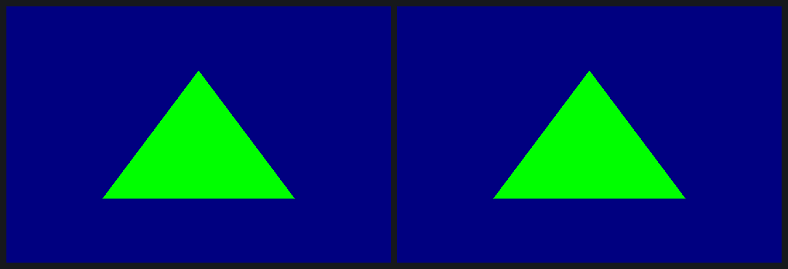
1.7@862890, i386, run on openHC through the kernel's IA32 compat layerThe first tool was an LD_PRELOAD tracer. It logs every PVR services bridge call and, before each GPU kick, copies all the GPU memory the process has mapped. The first traced triangle showed 445 bridge calls and not a single mapping.
The reason was in the symbol table: libsrv_um imports syscall next to mmap64. It maps GPU memory with a raw syscall(__NR_mmap2), passing a kernel cookie as the page offset. Hooking syscall() fixed it: the next capture held 434 memory snapshots and 217 mappings.
_IOC_NR() became the size of a char array, and nm read the sizes back: 105 IDs.glDrawArrays becomes an indexed draw.glReadPixels triggers, not glFinish.A small typed client on the GPL headers covers connect, memory context, allocate and map, wrap, render context and kick. A capture turns into a script for it: 1,485 operations over 196 buffers. The replayer is a static x86_64 binary that loads no vendor library.
Its first run hit a driver bug that no 32-bit client could ever have triggered:
replay:5: map of buffer 0 failed
PVR_K:(Error): DoMapToUser: Error - VM_INSERT_PAGE failed (-14)
The driver walks user mappings with a 32-bit integer, so a 64-bit process mapping above 4 GB gets a truncated address. With MAP_32BIT as a workaround, the second run produced a back buffer identical to the blob's frame, with the same md5 four runs out of four. The real fix to the driver is written and its CI image is building; it has not been booted yet.
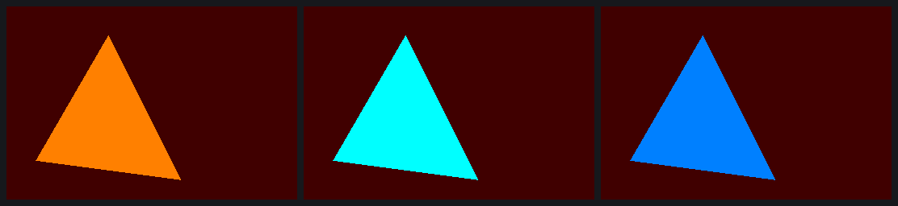
pck.u8.f32 instructions replace the shader. Blue: one hand-assembled fmad16 computes 1 − c.Before every shader task, a small undocumented processor called the PDS runs a program. It DMAs vertices, sets up varyings, hands texture state to the texture unit and starts the shader. Its halt word appears as an immediate in four of Intel's libraries, which pointed to one shared code generator that writes each instruction as shifted fields ORed into a base word. The disassembler now reads all 13 captures with no unexplained bit.
; the triangle's vertex fetch, as dis.py prints it mul16 ds1[0x32], in0.lo, ds1[0].lo ; temp = vertex index × stride (8) movs.x2.s27 doutd, ds0[0], ds0[1], ds1[0x32], … ; DMA 2 dwords from 0x3e51d030 + temp movs.cc3 doutu, ds0[2], ds0[3], ds1[1], ds1[1] ; start the vertex shader halt
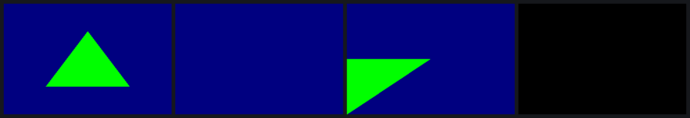
PVR_K:(Error): SGXOSTimer() detected SGX lockup (0x10f16 tasks) PVR_K: HWRecoveryResetSGX: SGX Hardware Recovery triggered PVR_K:(Error): HWRecoveryResetSGX: SGXInitialise failed (24) ; ×33 in 45 s
Recovery looped about once a second, and only a power cycle clears that. The EA3 sits on a TP-Link HS110 smart plug called Bench, which a script drives over the plug's local protocol. The box was back 54 seconds after the cycle. After that, the rule was one poked replay at a time, with a check of the kernel log in between.
No register names exist for the rasteriser or the pixel back end, so every field was named from the code that writes it. The state is spread across the TA command, the control stream, a DMA'd state block, an end-of-tile shader and kernel-side structures. The decoder follows all five, and 70 captures decode with no unknown word.
Some things aren't where you'd expect. There is no scissor rectangle: the driver draws tile-clipped objects instead. Blending is mostly shader code the driver appends. The render target's address, stride and clip are immediates inside the end-of-tile program.
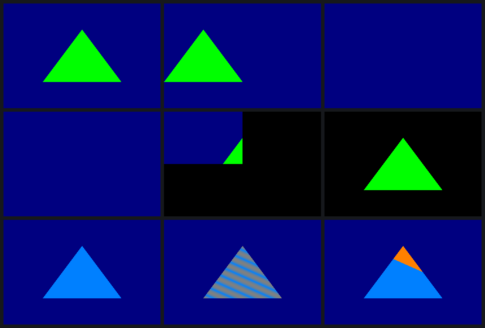
| Run | Field | Poke | Result |
|---|---|---|---|
| p1 | Viewport x offset 360 → 180 | 0x30401098 ← 43340000 | frame shifted exactly 180 px |
| p2 | Depth compare → GREATER | 0x30401084 ← 01100200 | no triangle |
| p4 | Cull mode → 2 | 0x304010bc ← 01555622 | no triangle |
| p5 | End-of-tile clip → 359×239 | 0x37004010 ← 002f0167 fca00070 | only 360×240 written |
| p6 | Stride 736 → 640 | 0x37004018 ← 005f8000 fca00090 | 0 of 353,280 differ at pitch 640 |
| p8 | Texture filter → linear | 0x2e018038 ← 07fe1400 | the DDK's own linear render |
| p9 | Texture wrap → mirror | 0x2e018038 ← 07fe0048 | the DDK's own mirror render |
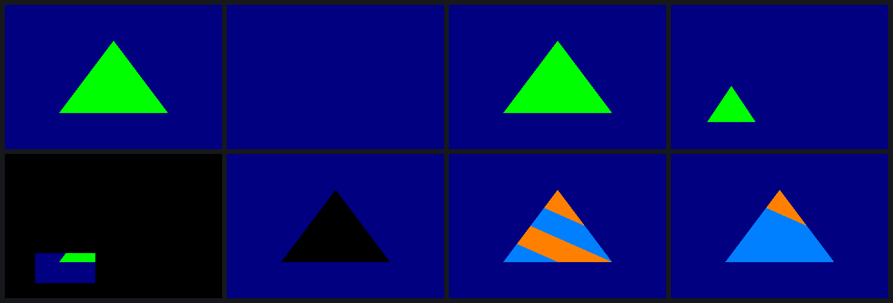
glViewport, glScissor, colour mask, an 8×8 texture, mirror wrap.USSE instructions are 64 bits wide. The shader compiler, libusc, carries Imagination's hardware encoder inside it, and that encoder became the oracle.
The encoder only says where the bits go. To find out what the hardware does with them, a test program ends in mov o0, rN, so every pixel of the triangle is a register value read straight off the screen. That gave 442 draws, run twice with identical results.
fsin(t) is sin(t·π/2), to about 16 bits.r1.f16 is the high half of r0.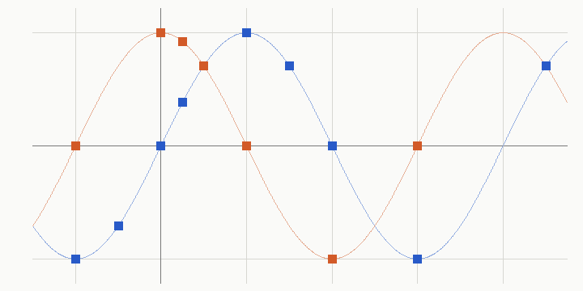
fsin (blue) and fcos (orange) as measured on the EA3. Lines: sin and cos of t·π/2. The largest error over 17 points is 2.1 × 10⁻⁵.// normalize(p.xyz), as the decoder prints it fdual.fssq.mov o0, pa2, pa0, pa1 [sd=i2 msrc=src0] ; o0 = x² + y², and i2 = z fdual.mov.fmad o3, r0, c52, o0 ; add z² frsq o1, i2 ; 1 / sqrt fmad o0, pa0, o1, -c48 [rpt=3 moe] ; scale x, y, z in one instruction
The first line here exposed a decoder bug: when the dual-issued secondary op is a mov, it takes one source selector, not two. And discard isn't in the compiled shader at all. The driver rebuilds the program into two phases at draw time and swaps a placeholder nop for an alpha-test instruction.
Before anything renders, something has to load the GPU's microkernel. On openHC that was a 32-bit library call at boot that works once per boot, so every hardware attempt costs a power cycle of a box other work depends on. So the hardware stayed out of the loop as long as possible.
PVR_K:(Error): pvr: invalid param size for IOCTL#99:
kern/user in,out: 2192/2192,16/8
The driver expects a 16-byte reply from 64-bit callers, while its handler writes 8. On i386 both are 8, so only a native caller ever sees this. With a 16-byte buffer, the next boot worked:
== uptime 29.86, pvr-compat lines so far: 0 srvinit: SGX545 microkernel started (ukernel at 0x30000000, pd 0x01d0b000) PVR_K: SysFinalise: SGX revision = 1.0.14 replay: back buffer IDENTICAL to the reference
Zero compat-layer lines means no 32-bit code had talked to the driver yet. The GPU was started and driven by open x86_64 code alone. Intel's own GL client still drew its triangle on it afterwards.
The open init now also assembles the five small programs that start the microkernel, byte for byte the same as Intel's. The only vendor bytes it needs are the 53,096-byte microkernel, which a script extracts from the owner's own driver package. They are not in the repository.
Up to here every frame started from a capture. re/gen builds all of it from GL-level parameters instead: the parameter buffer and free list, render details, the TA command, the control stream and state blocks, every PDS program from its encoding tables, and every shader from assembly text. Its first output was the reference triangle, bit for bit.
Getting there cost three power cycles and taught two rules:
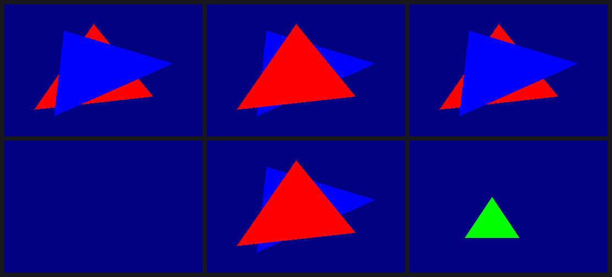
glViewport(100, 50, 400, 300). Every case: 0 pixels different.Two pieces landed together. A compiler takes Mesa's NIR and emits USSE machine code. Every instruction it produced for the test corpus and for gl4es's Minecraft shaders matches Intel's own encoder. Running under Intel's GL driver in place of Intel's compiler, it gives identical frames for all eight shaders Minecraft uses.
The second piece is a Mesa gallium driver, kept in the sgx545-ce repo as an overlay on Mesa 26.2.5. eglinfo on the EA3 reports PowerVR SGX545 (sgx545-ce), OpenGL ES 2.0. The first triangle drawn through the real GLES2 API read back byte-identical to Intel's driver. Frames then had to keep running in one context: the microkernel owns the parameter buffer after the first kick, and the client only bumps a frame counter and re-arms two sync words. With that, es2gears runs with its own shaders compiled by our compiler, at 403 FPS.
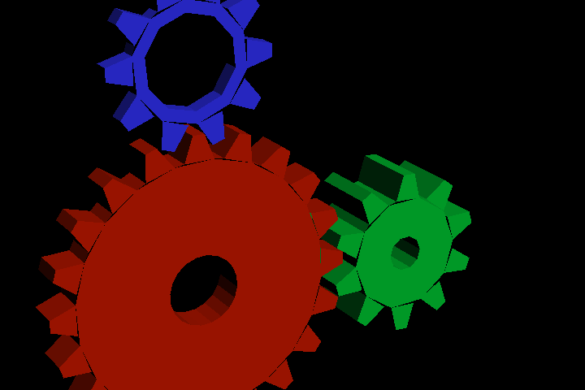
Each feature was added by drawing the same scene through Intel's driver and through ours, then comparing bytes: 7 texture cases (sizes, NPOT, L8, LA88, RGB565), 10 blend states and 7 colour-mask cases, all identical. Blending turned out to be a shader epilogue, a sop2 that reads the framebuffer colour, run in a translucent pass. Our driver also does GL-correct min/max blending, which Intel's never supported.
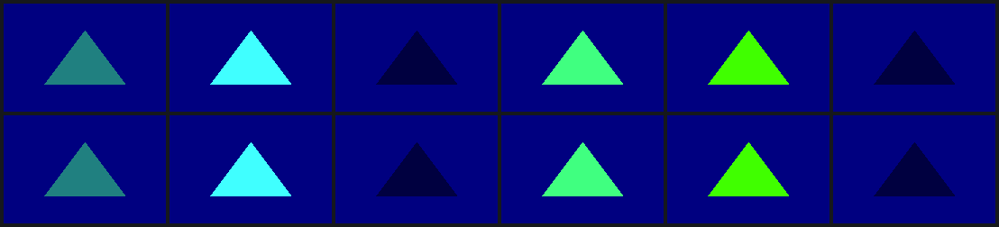
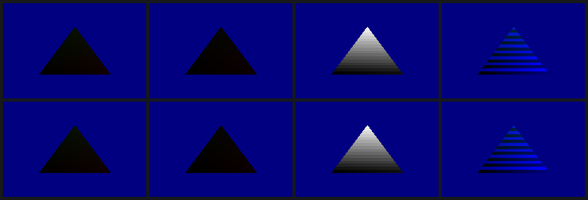
gl4es ships apitrace recordings of real programs (glxgears, neverball, stuntcarracer, descent3 and others) with reference images. All 14 replay to the end on our driver with no GPU recoveries; Intel's driver had recoveries in 6 of them. Each lockup the traces found became a rule in the driver: one hardware render context per process, and discarding shaders built in two phases the way Intel builds them.
Then the game itself. Minecraft 1.7.10 started on the EA3 through the stock gl4es, on our driver, and drew its title screen's rotating panorama. The next step, copying that panorama into a texture and blurring it behind the logo and buttons, doesn't come out yet.
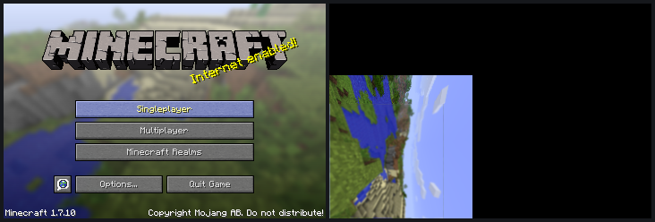
By the evening the game was in a world, on the EA1 connected to the monitor. Frames render into a back buffer and reach the screen through our own GPU blit, so nothing flickers. The menus and loading screens replay byte-identical to Intel's driver. Speed came in steps: frames now overlap the GPU instead of waiting for each one, glFlush calls that split a frame are deferred, fences wait for their own frame, and Minecraft's unchanged chunk buffers are cached instead of gathered again every draw. That took the bench world from 6–9 FPS to 16–19, against Intel's 28–39 on the same box. The player's arm still draws dark and streaky.
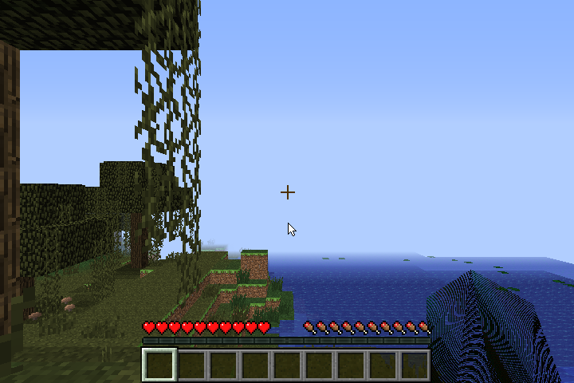
The work ran as parallel Claude Code sessions, each in its own clone, covering replay, PDS, render state, the shader ISA (with a finalizer trace and a hardware check), init, and one session coordinating them. They shared one EA3 with a session working on the box's Ethernet switch. Every session announced its GPU runs, and nobody cut power while someone else objected. The EA1 next to it was left alone: it runs the live Minecraft session.
| UTC | Power cycle | Outcome |
|---|---|---|
| 04:20 | Clear the PDS wedge | back in 54 s |
| 04:39 | Trace Intel's init from cold boot | lost tracer not synced before the plug cut |
| 04:41 | Trace Intel's init, again | traced 156,917-byte log |
| 05:47 | First open init | -22 16-byte reply |
| 05:52 | Open init, fixed | up no Intel code |
| 08:07 | Generated frame without a vertex epilogue | hung TA lockup |
| 08:12 | Generated frame after a replay | hung stale kernel-data pointers |
| 08:17 | Render-target flush call | hung then fixed by matching Intel's layout |